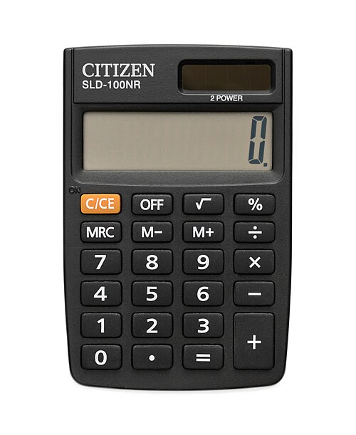

🟦 Term 1 — Question & Answer Mock Test 2
15 written questions. Write a full sentence answer first, then open the arrow to check.
Q1. Answer in Spanish: ¿Cómo estás hoy? (say you are very well)
▶ Answer & explanation
The question means: "How are you today?" — say you feel very well. ✅ Model answer:
- 🇪🇸 Estoy muy bien.
- 🇬🇧 I am very well.
Q2. Translate into Spanish: I am nervous and a bit worried. (girl)
▶ Answer & explanation
The question means: Put the feelings sentence into Spanish. ✅ Model answer:
- 🇪🇸 Estoy nerviosa y un poco preocupada.
- 🇬🇧 I am nervous and a bit worried. (Girl → ‑a endings.)
Q3. Translate into English: Estoy enfadado porque mi hermano es muy antipático.
▶ Answer & explanation
The question means: Put the Spanish into English. ✅ Model answer:
- 🇬🇧 I am angry because my brother is very unpleasant.
- 🇪🇸 enfadado = angry, antipático = unpleasant/unfriendly.
Q4. Answer in Spanish: ¿Dónde vives? (say you live in Madrid)
▶ Answer & explanation
The question means: "Where do you live?" — say Madrid. ✅ Model answer:
- 🇪🇸 Vivo en Madrid.
- 🇬🇧 I live in Madrid.
Q5. Write the number 27 in Spanish words.
▶ Answer & explanation
The question means: Write 27 as a Spanish word. ✅ Model answer:
- 🇪🇸 veintisiete
- 🇬🇧 twenty‑seven (veinte 20 + siete 7).
Q6. Translate into Spanish: My birthday is the 31st of December.
▶ Answer & explanation
The question means: Put the date sentence into Spanish. ✅ Model answer:
- 🇪🇸 Mi cumpleaños es el treinta y uno de diciembre.
- 🇬🇧 My birthday is the 31st of December.
Q7. Look at the picture and write the Spanish word (with el/la).

▶ Answer & explanation
The question means: Name this object with "the". ✅ Model answer:
- 🇪🇸 la calculadora
- 🇬🇧 the calculator (feminine → la).
Q8. Translate into Spanish: In my pencil case there is a pen, two pencils and a rubber.
▶ Answer & explanation
The question means: Put the sentence into Spanish. ✅ Model answer:
- 🇪🇸 En mi estuche hay un bolígrafo, dos lápices y una goma.
- 🇬🇧 In my pencil case there is a pen, two pencils and a rubber. (lápiz → lápices in the plural.)
Q9. Translate into English: Mis lápices son viejos pero útiles.
▶ Answer & explanation
The question means: Put the Spanish into English. ✅ Model answer:
- 🇬🇧 My pencils are old but useful.
- 🇪🇸 son = they are, viejos = old, útiles = useful.
Q10. Translate into Spanish: I have a green folder and a red ruler.
▶ Answer & explanation
The question means: Put the sentence into Spanish (mind the endings). ✅ Model answer:
- 🇪🇸 Tengo una carpeta verde y una regla roja.
- 🇬🇧 I have a green folder and a red ruler. (carpeta/regla feminine → roja; verde doesn't change.)
Q11. Answer in Spanish: ¿Cómo es tu mochila? (say it is blue, new and cool)
▶ Answer & explanation
The question means: "What is your backpack like?" — describe it as blue, new and cool. ✅ Model answer:
- 🇪🇸 Mi mochila es azul, nueva y chula.
- 🇬🇧 My backpack is blue, new and cool.
Q12. Translate into Spanish: In my family there are four people: my mother, my father, my sister and me.
▶ Answer & explanation
The question means: Put the family sentence into Spanish. ✅ Model answer:
- 🇪🇸 En mi familia hay cuatro personas: mi madre, mi padre, mi hermana y yo.
- 🇬🇧 In my family there are four people: my mother, my father, my sister and me.
Q13. Translate into English: Tengo el pelo corto y moreno y los ojos marrones.
▶ Answer & explanation
The question means: Put the description into English. ✅ Model answer:
- 🇬🇧 I have short, dark/brown hair and brown eyes.
- 🇪🇸 corto = short, moreno = dark/brown, ojos marrones = brown eyes.
Q14. Answer in Spanish: ¿Cómo eres? (say you are funny, nice and sporty — you are a girl)
▶ Answer & explanation
The question means: "What are you like? (personality)" — say funny, nice and sporty. ✅ Model answer:
- 🇪🇸 Soy graciosa, simpática y deportista.
- 🇬🇧 I am funny, nice and sporty. (Personality uses soy, not estoy.)
Q15. Write 2–3 sentences in Spanish about a pet you have (or would like): what it is, its name and its colour.
▶ Answer & explanation
The question means: Write a few sentences about a pet using Term 1 language. ✅ Model answer:
- 🇪🇸 Tengo un perro. Se llama Toby. Es marrón y blanco y es muy gracioso.
- 🇬🇧 I have a dog. He is called Toby. He is brown and white and he is very funny.
- ✔️ Good answers use Tengo un/una… / Se llama… / Es + colour + adjective.
🏁 How did you do? ____ / 15
➡️ Back to the README or on to Tab 2 — Term 2 MCQ Mock 1.